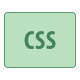
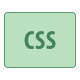

I am a Computer Science and Engineering graduate from Rajshahi
University of Engineering and Technology, Bangladesh and an independent researcher.
My research interests center around Machine Learning, Deep
Learning, and Natural Language Processing, with a focus on
exploring their versatile applications across interdisciplinary
domains.
My work encompasses research projects like automated
fact-checking and streamlining misinformation detection, integrating
qualitative and empirical approaches with technical expertise.
I enjoy actively participating in co-curricular activities such as
programming contests, debates, workshops, and idea competitions.
My vision is to make a meaningful impact on the world through my
skills and intelligence. My hobby is reading books.


 
